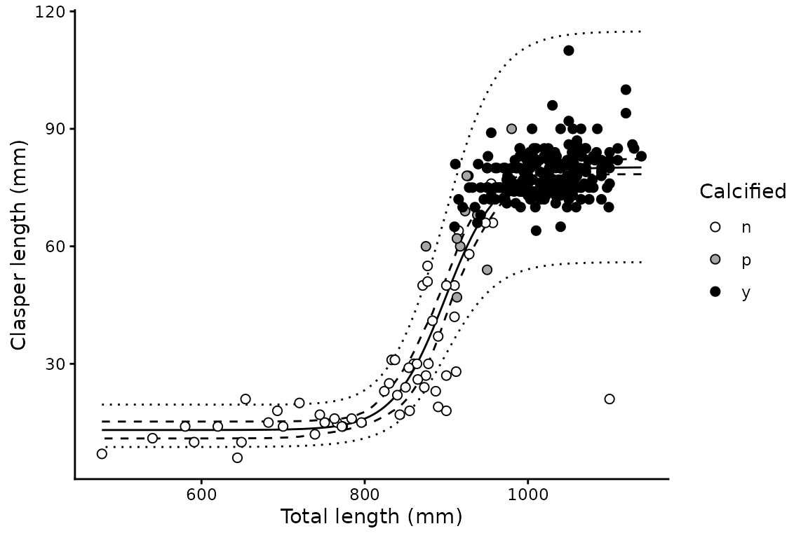
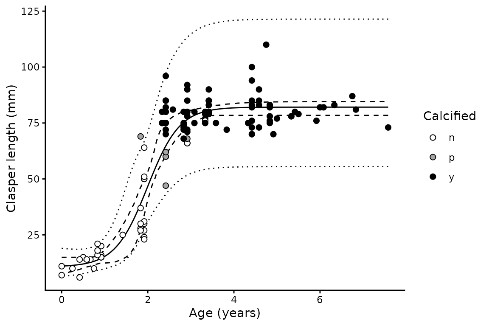

Clasper length analysis
clasp-length.RmdBackground
Male chondrichthyans undergo a rapid elongation and calcification of
the claspers as they mature. Clasper length plotted against body length
or age is therefore sigmoid: near-constant in juveniles, steeply
increasing through maturation, and asymptotic in adults.
clasp_length() fits that curve:
where
and
are the juvenile and adult asymptotes, and
and
are the values of the predictor at which clasper length reaches 50% and
95% of the way between them. The
term is what makes
and
mean exactly that — the same reparameterisation used by
maturity(), so the two are directly comparable.
The model is fitted on the log scale by nls(). This
gives multiplicative error, matching the way variability in clasper
length grows with clasper size, and means the fitted curve describes
median clasper length at a given size.
Basic usage
Females have no clasper measurement and are dropped automatically, so the whole data frame can be passed in:
library(mustelus)
#> Welcome to mustelus package
data(spottail)
cl <- clasp_length(clasp_length, length, clasp_calc, data = spottail, times = 200)
#> The calcification variable clasp_calc has 3 levels.
summary(cl)
#> # A tibble: 1 × 15
#> a a_lower a_upper b b_lower b_upper L50 L50_lower L50_upper L95
#> <dbl> <dbl> <dbl> <dbl> <dbl> <dbl> <dbl> <dbl> <dbl> <dbl>
#> 1 80.2 78.4 82.5 13.1 10.9 15.2 898. 888. 909. 992.
#> # ℹ 5 more variables: L95_lower <dbl>, L95_upper <dbl>, Sigma <dbl>, n <int>,
#> # x.range <chr>Claspers are around 13 mm in juveniles and asymptote near 80 mm in adults, with the transition centred on 898 mm.
Plotting
plot(cl) + xlab("Total length (mm)") + ylab("Clasper length (mm)")
The solid line is the fitted median, the dashed ribbon the 95% confidence interval and the dotted ribbon the 95% prediction interval. Both are obtained by bootstrap: the confidence interval from the percentiles of the resampled curves, and the prediction interval by combining that bootstrap variance with the residual variance of the fit.
Passing the optional calcification variable shades the points by stage — white for uncalcified, grey for partially calcified and black for fully calcified. This is a useful check on the fitted curve, since the three stages should separate along it: uncalcified animals on the lower asymptote, partially calcified animals through the steep transition, and calcified animals on the upper asymptote. Calcification is used only for plotting and does not enter the model.
Using age as the predictor
cl_age <- clasp_length(clasp_length, age_agree, clasp_calc, data = spottail, times = 200)
#> The calcification variable clasp_calc has 3 levels.
#> 1 of 200 bootstrap replicates failed to converge and were dropped.
summary(cl_age)
#> # A tibble: 1 × 15
#> a a_lower a_upper b b_lower b_upper L50 L50_lower L50_upper L95
#> <dbl> <dbl> <dbl> <dbl> <dbl> <dbl> <dbl> <dbl> <dbl> <dbl>
#> 1 82.1 78.4 84.5 10.7 5.31 15.0 1.99 1.81 2.10 3.09
#> # ℹ 5 more variables: L95_lower <dbl>, L95_upper <dbl>, Sigma <dbl>, n <int>,
#> # x.range <chr>
plot(cl_age) + xlab("Age (years)") + ylab("Clasper length (mm)")
Starting values
nls() needs starting values, and
clasp_length() derives them from the data: the asymptotes
from the mean clasper length of the smallest and largest 20% of animals,
and
and
by interpolating binned means. Fitting uses the "port"
algorithm with both asymptotes constrained positive, since a negative
asymptote would make the log-scale model undefined.
If a fit fails to converge, supply starting values directly:
clasp_length(clasp_length, length,
data = spottail, times = 50,
start = list(a = 80, b = 13, L50 = 900, L95 = 990)
) |> summary()
#> # A tibble: 1 × 15
#> a a_lower a_upper b b_lower b_upper L50 L50_lower L50_upper L95
#> <dbl> <dbl> <dbl> <dbl> <dbl> <dbl> <dbl> <dbl> <dbl> <dbl>
#> 1 80.2 78.1 81.7 13.1 10.7 15.4 898. 889. 909. 992.
#> # ℹ 5 more variables: L95_lower <dbl>, L95_upper <dbl>, Sigma <dbl>, n <int>,
#> # x.range <chr>Comparison with maturity
Because both functions report on the same scale, clasper elongation can be compared directly with the onset of maturity:
mat <- maturity(maturity_stage, length, data = spottail[spottail$sex == "m", ],
times = 200)
data.frame(
quantity = c("Clasper elongation", "Maturity"),
L50 = c(summary(cl)$L50, summary(mat)$L50),
L95 = c(summary(cl)$L95, summary(mat)$L95)
)
#> quantity L50 L95
#> 1 Clasper elongation 898.5 992.1
#> 2 Maturity 929.2 982.7Output structure
The result is a one row tibble with list columns, including the bootstrap parameter estimates:
# Fitted nls object
cl$mods[[1]]
#> Nonlinear regression model
#> model: log(clasp) ~ log(clasp_curve(x, a, b, L50, L95))
#> data: d
#> a b L50 L95
#> 80.18 13.09 898.50 992.12
#> residual sum-of-squares: 9.914
#>
#> Algorithm "port", convergence message: relative convergence (4)
# Bootstrap parameter estimates, one row per replicate
head(cl$boot_coefs[[1]])
#> a b L50 L95
#> 1 77.78618 16.16583 901.0248 961.9591
#> 2 77.84202 14.24222 888.3088 966.5087
#> 3 80.53822 14.65627 907.4333 981.8426
#> 4 81.25401 14.17027 900.9768 995.3944
#> 5 81.47458 12.87377 897.5844 996.8090
#> 6 80.93300 12.99348 900.6766 992.2190